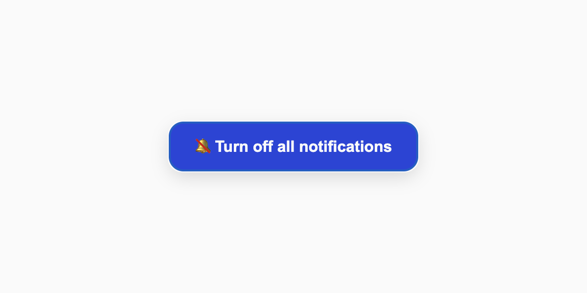

[010]
Turn off all notifications
Even when you try to turn everything off, the system has to have the last word.
View demo →

[009]
Procrastination Timer
If you’ve come this far already, you might as well waste a minute on the procrastination timer.
View demo →
[008]
Mirror Cursor
There’s no strong reason behind this, it just feels interesting and useless.
View demo →

[007]
Infinite Scroll
Those apps like Instagram and X never run out of content. So why should my website?
View demo →

[006]
Button Loop
If you don’t have space for all the buttons you need, just loop them.
View demo →

[005]
Mirror Browser
Mirror Browser is a perfect example of a useless interface. Honestly, I don’t even know why or how this exists, but here it is.
View demo →

[004]
Human Captcha
A robot can figure out where the stairs are in a photo, but there’s something it can’t do.
View demo →

[003]
Credit Card
How can we stop people from buying pointless stuff online? This form is the answer.
View demo →

[002]
Unscrollable Scroll
Moving ideas from the offline world into online. What’s stopping people?
View demo →

[001]
Unsubscribe Button
If you’re already keeping the unsubscribe button out of sight, here’s a way to make the user experience even more entertaining.
View demo →
Hi, I'm Marko — welcome to a gallery of digital nonsense, a collection of experiments born from curiosity and AI tools.
When I’m not exploring the useless, I’m designing the useful.
Portfolio →
Send email